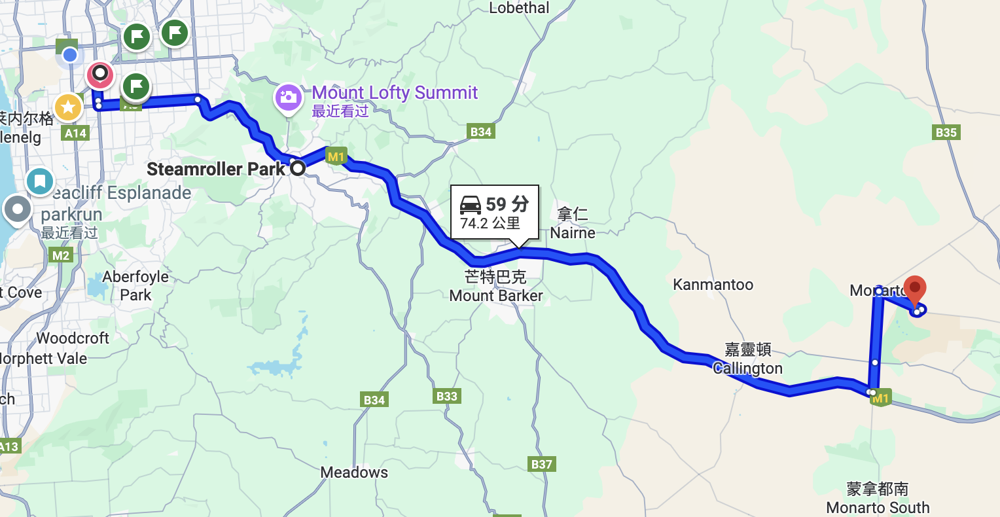
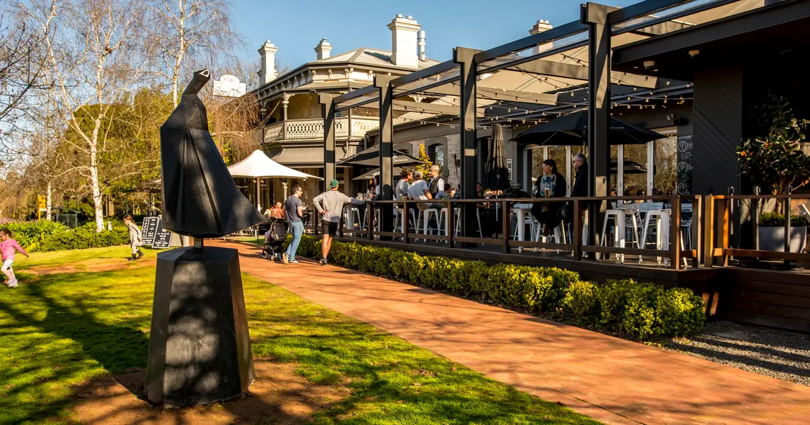
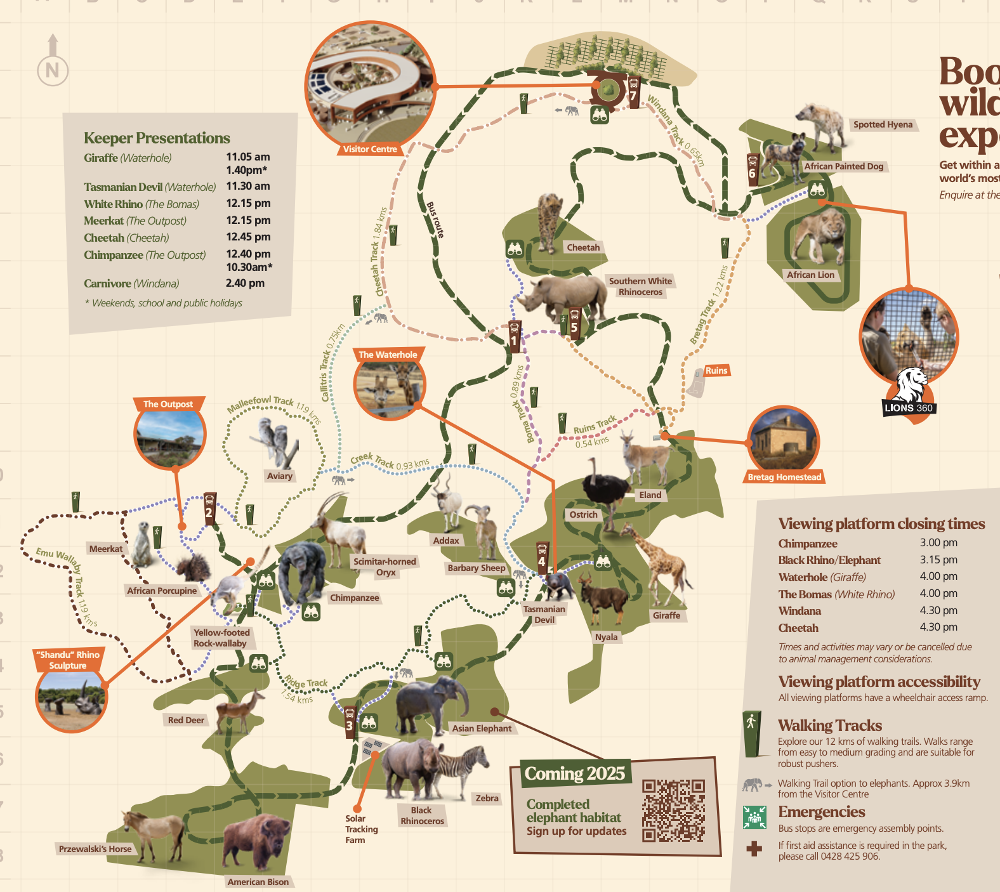
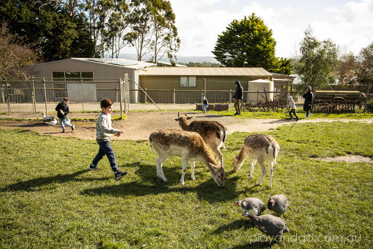
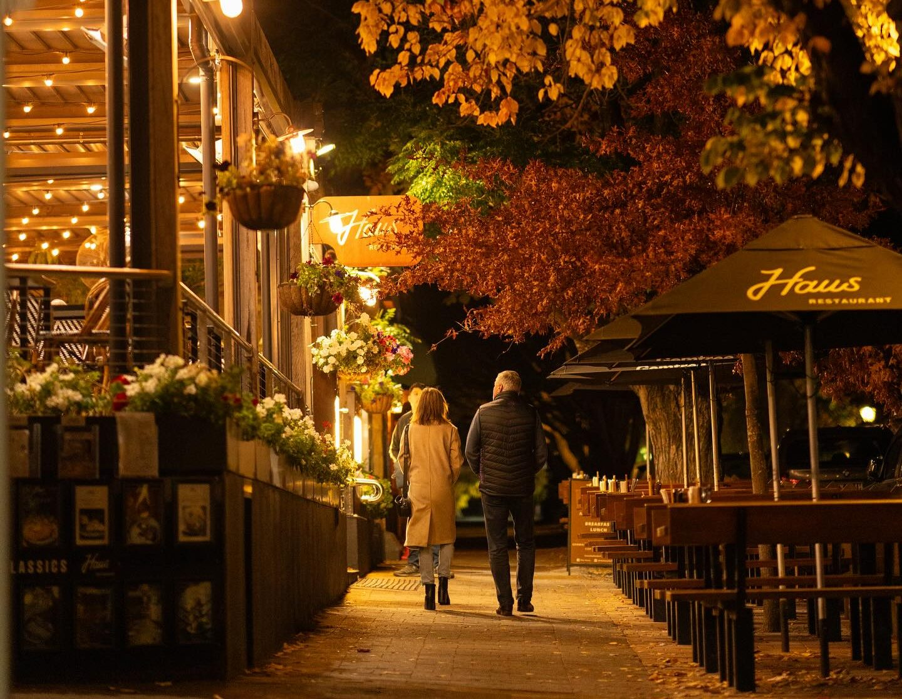
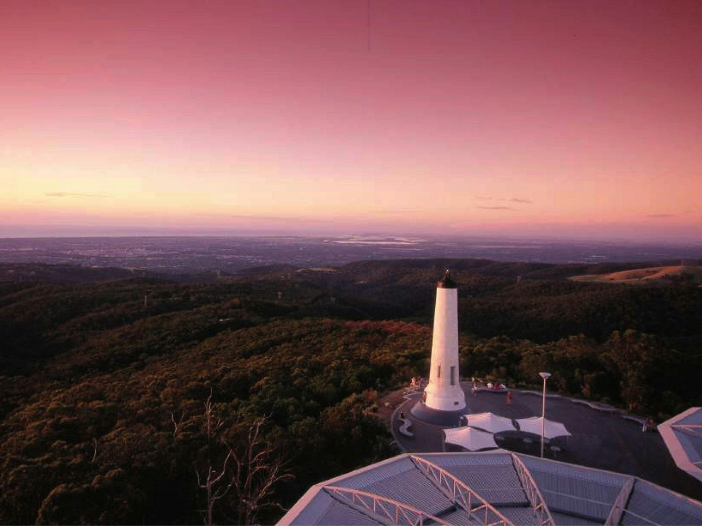

行程路线
- 8:15 从Ashford出发
- 8:30 到达 斯特灵 Steamroller Park（游乐场、早餐）
- 9:30 离开斯特灵
- 10:00 到达 莫纳托野生动物园（狮子互动、观赏动物、午餐）
- 14:00 离开莫纳托野生动物园
- 14:30 到达 汉道夫 Farm Barn（农家谷仓体验）
- 17:15 汉道夫旅店晚餐
- 18:15 离开汉道夫
- 18:30 到达 洛夫蒂山顶（观赏夜景）
- 19:30 返回家中
莫纳托野生动物园一日游路线图
斯特灵 Steamroller Park 亮点
位于斯特灵的家庭友好型公园，设有现代化游乐设施和舒适的早餐环境，是开始一天行程的理想地点。
- 现代化游乐场：设有适合各年龄段儿童的游乐设施，包括攀爬架、滑梯和秋千等，让孩子们在旅程开始前尽情玩耍。
- 早餐设施：公园附近有多家咖啡厅和早餐店，提供新鲜美味的早餐选择，为一天的行程补充能量。
- 宽敞草坪：开阔的绿地空间，适合家庭野餐和休闲活动，让大人和孩子都能享受户外时光。
- 便利设施：配备完善的停车场、洗手间和座椅区域，为游客提供舒适便利的体验。

莫纳托野生动物园亮点
澳大利亚最大的开放式野生动物园，位于阿德莱德以东70公里，提供与野生动物近距离接触的独特体验。
- 狮子互动体验（10:30）：参加专业导游带领的狮子近距离观察活动，了解狮子的生活习性和保护知识，这是园区最受欢迎的体验项目之一。
- 非洲草原区：观赏长颈鹿、斑马、犀牛、河马等非洲野生动物，体验开放式的野生动物园环境，动物们在广阔的草原上自由生活。
- 澳洲本土动物区：近距离接触袋鼠、考拉、袋熊、塔斯马尼亚恶魔等澳大利亚特有动物，了解本土生态系统。
- 园区午餐（12:30）：在园区餐厅享用午餐，同时欣赏周围的自然风光和野生动物。
- 教育中心：参观野生动物保护教育中心，了解动物保护工作和可持续发展理念。

汉道夫农家谷仓体验
位于阿德莱德山区的德式小镇汉道夫，体验传统农家生活和德国文化的完美融合。
- 农家谷仓参观：探索传统的德式农家建筑，了解早期德国移民的农业生活方式和历史文化。
- 动物互动：与农场动物近距离接触，包括羊驼、山羊、绵羊等温顺的农场动物，适合全家人体验。
- 手工艺品展示：观赏传统德国手工艺品制作过程，包括木雕、陶艺和纺织品等。
- 农场产品品尝：品尝新鲜的农场产品，包括有机蔬菜、自制奶酪和传统德式面包。
- 德式花园：漫步在精心设计的德式花园中，欣赏四季花卉和传统园艺设计。

汉道夫旅店晚餐
在历史悠久的汉道夫旅店享用正宗的德式晚餐，体验传统德国美食文化。
- 德式传统菜肴：品尝正宗的德国香肠、酸菜、猪肘等经典德式料理，感受地道的德国风味。
- 精酿啤酒：享用当地酿造的德式啤酒，包括小麦啤酒、黑啤等多种选择。
- 历史建筑氛围：在保持19世纪德式建筑风格的餐厅中用餐，感受浓厚的历史文化氛围。
- 现场音乐：欣赏传统德国民谣和现场音乐表演，增添用餐的愉悦体验。
- 德式甜点：品尝传统的德式甜点，如黑森林蛋糕、苹果卷等经典甜品。

洛夫蒂山顶夜景
阿德莱德最高观景点，海拔727米，是观赏阿德莱德市区和海岸线夜景的最佳地点。
- 360度全景观景：从山顶观景台可以360度俯瞰阿德莱德市区、圣文森特湾和阿德莱德山区的壮丽景色。
- 夜景摄影：黄昏时分是拍摄阿德莱德夜景的最佳时机，城市灯火与海岸线形成美丽的光影效果。
- 观景台设施：设有现代化的观景台和休息区，提供舒适的观景体验。
- 山顶咖啡厅：在山顶咖啡厅享用热饮，同时欣赏夜景，为一天的行程画下完美句号。
- 星空观测：远离城市光污染，是观赏南半球星空的理想地点。
